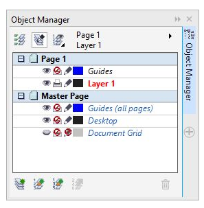

Layers provide a very effective way to organize the objects you create with CorelDRAW. By using layers, you can reduce your work time, make it easier to handle the job at hand, and increase the accuracy level of your designs.
Use Layers
The Object Manager docker (Figure 2) displays the current status of the document structure, making it easy to manage the layers and objects. It displays all pages in the active document with all the layers on each page, and all the objects placed on every layer of each page.

The buttons at the top of the docker let you view and manage the layers and objects.
- Show Object Properties — lets you view the properties of each object on the layer. Clicking the + icon next to the page name displays all the objects’ details.
- Edit Across Layers — lets you work on any object regardless of whether the object is located on the active layer. If the button is disabled, you will have to make a layer active in order to work on the objects on that layer, while all objects on the other layers will be temporarily locked.
- Layer Manager View — lets you manage the layer hierarchy and change the sequence of layers on the active page. You can drag the layers to any desired position in the hierarchy.
The buttons at the bottom of the docker let you create and delete layers.
- New Layer — creates a new layer on the active page.
- New Master Layer (all pages) — creates a new master layer on the Master Page. The objects placed on that layer will appear on all pages of the document.
- New Master Layer (odd pages) — creates a new master layer on the Master Page. The objects placed on that layer will appear on all odd-numbered pages of the document.
- New Master Layer (even pages) — creates a new master layer on the Master Page. The objects placed on that layer will appear on all even-numbered pages of the document.
- Delete Layer — deletes the selected layer together with all objects on that layer. The default master layers (Guides, Desktop, and Document Grid) cannot be deleted.
By default, CorelDRAW names the layers sequentially. For example, Layer 2, Layer 3, and so on. You can rename the layers for convenience and to make them more easily identifiable while you work.
The layer property buttons next to the name of each layer let you manage the properties of that layer.
- Eye icon — indicates the visibility of the layer. Enabling the eye icon makes the layer objects visible; disabling it hides the objects on that layer.
- Printer icon — toggles the printability of the layer. Enabling the printer icon lets you print and export the objects on the layer; disabling it blocks all objects on that layer from being printed and exported.
- Pencil icon — toggles the editability of the layer. Enabling the pencil icon lets you select and edit the objects on the layer; disabling it locks the objects and prevents them from being selected or edited.
Tip: Normally, the visibility and printability should be enabled or disabled together. Remember, a visible layer cannot be printed or exported if printability is disabled, and a non-visible layer can be printed and exported if printability is enabled. A layer that is visible but non-printable can be used to keep notes with the file. I use such a layer to keep the print details and other job information, so that I can refer to them at any time.
Preparing to start a job with layers
The design of a layered document requires some pre-planning before you start a blank CorelDRAW document. I prefer to scribble out the job design and the placement of objects on the artwork.
Creating a multi-page layered document
The first step is to set the page size for the job by starting a new document (File > New). By default, CorelDRAW starts a new document with one default layer named “Layer 1.” After you start a new document, make sure that the Object Manager docker is open (if not, click Window > Dockers > Object Manager).
For the calendar job, I’ve used two master layers and four local layers. To create a master layer, click the New Master Layer (all pages) button at the bottom of the Object Manager docker. Objects placed on this master layer will appear on all pages of your design. Then, create the required number of regular or local layers (in this case, four) by clicking the New Layer button. You now have one page ready.